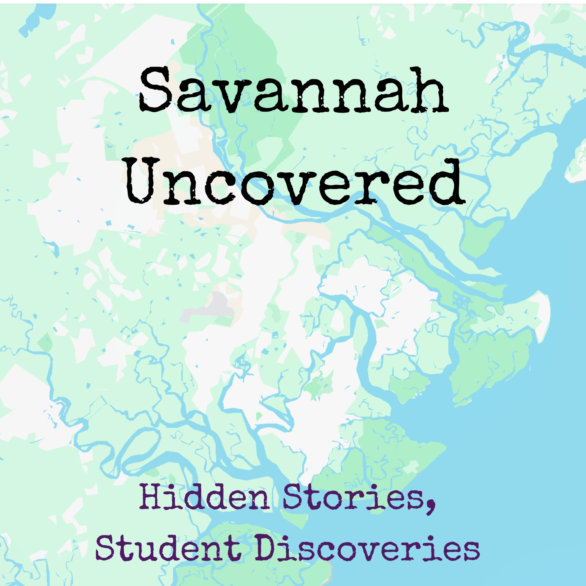
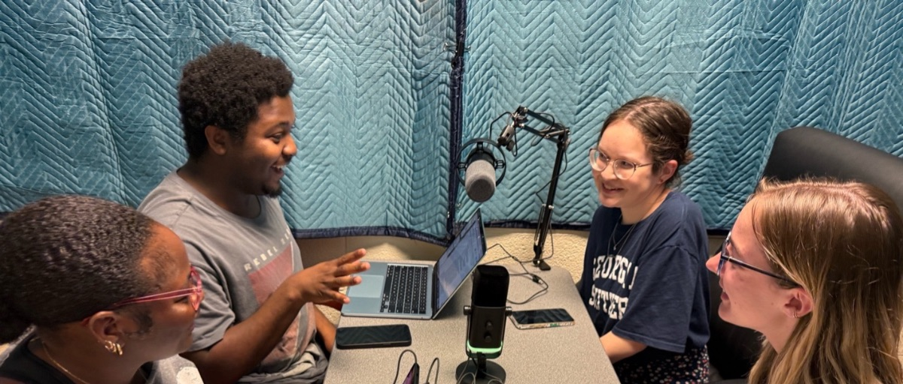
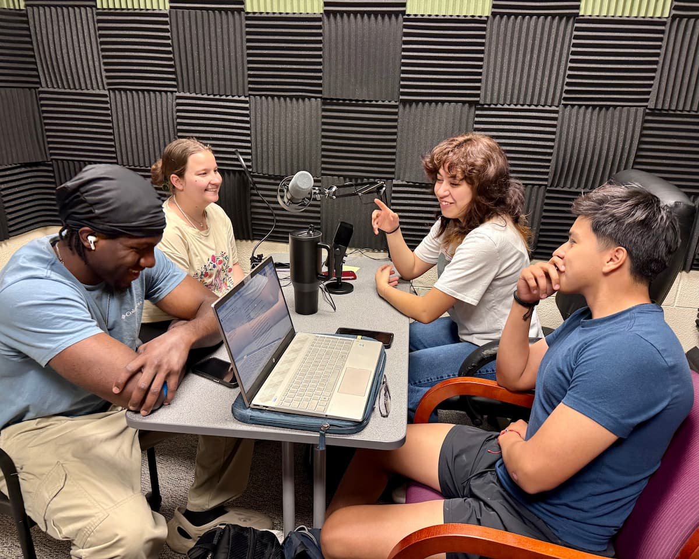
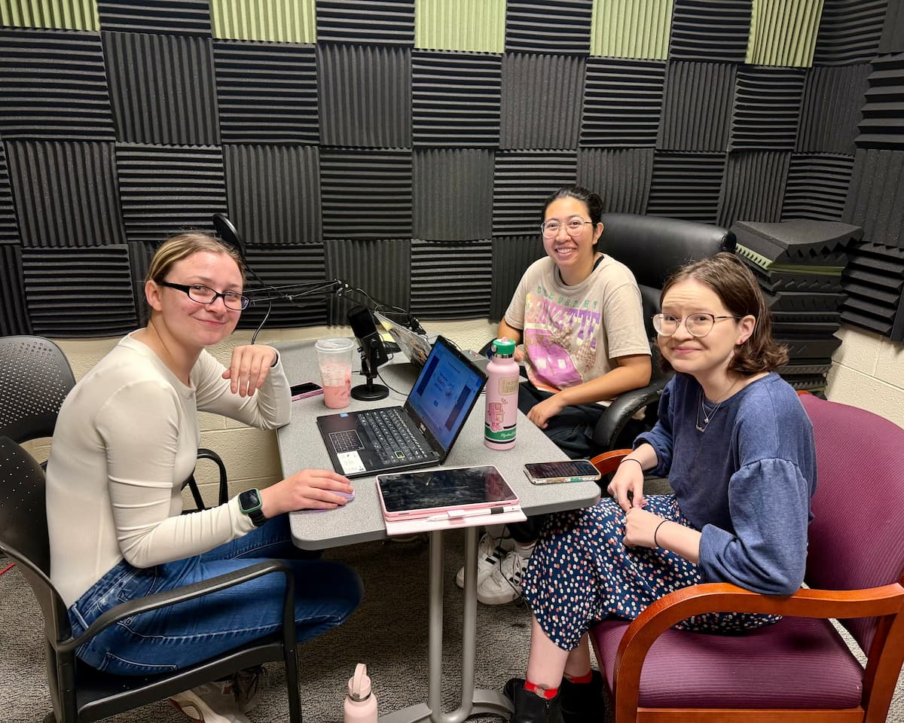
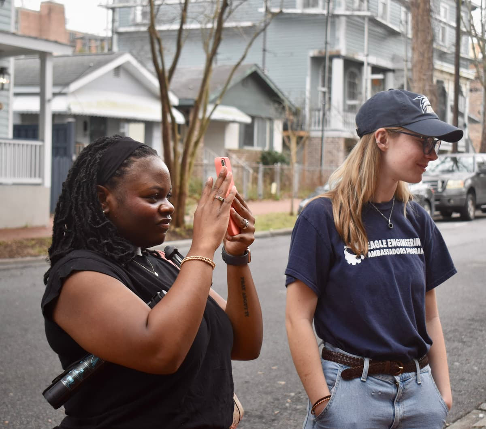
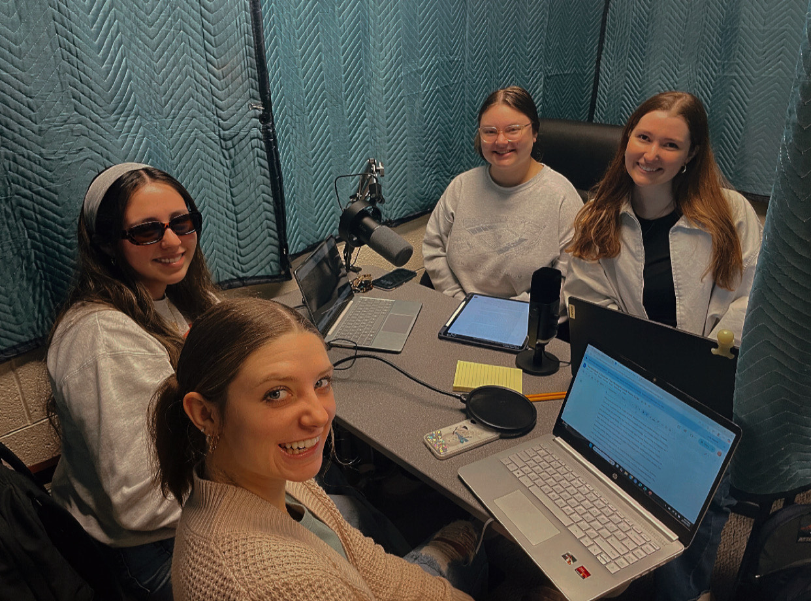
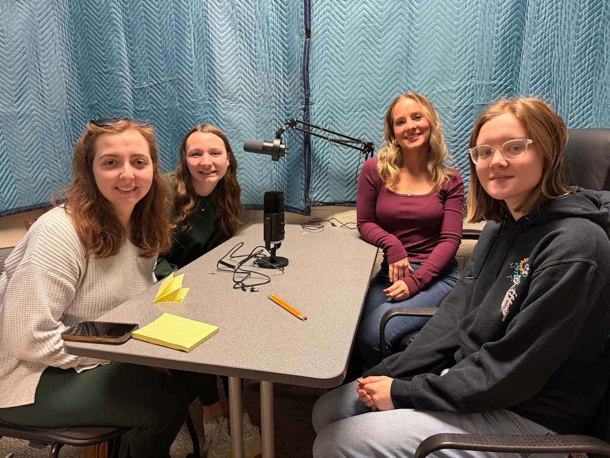
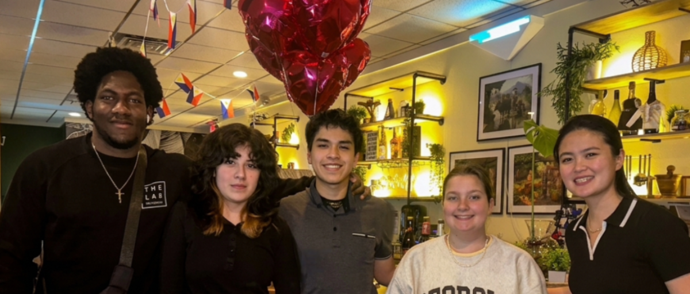
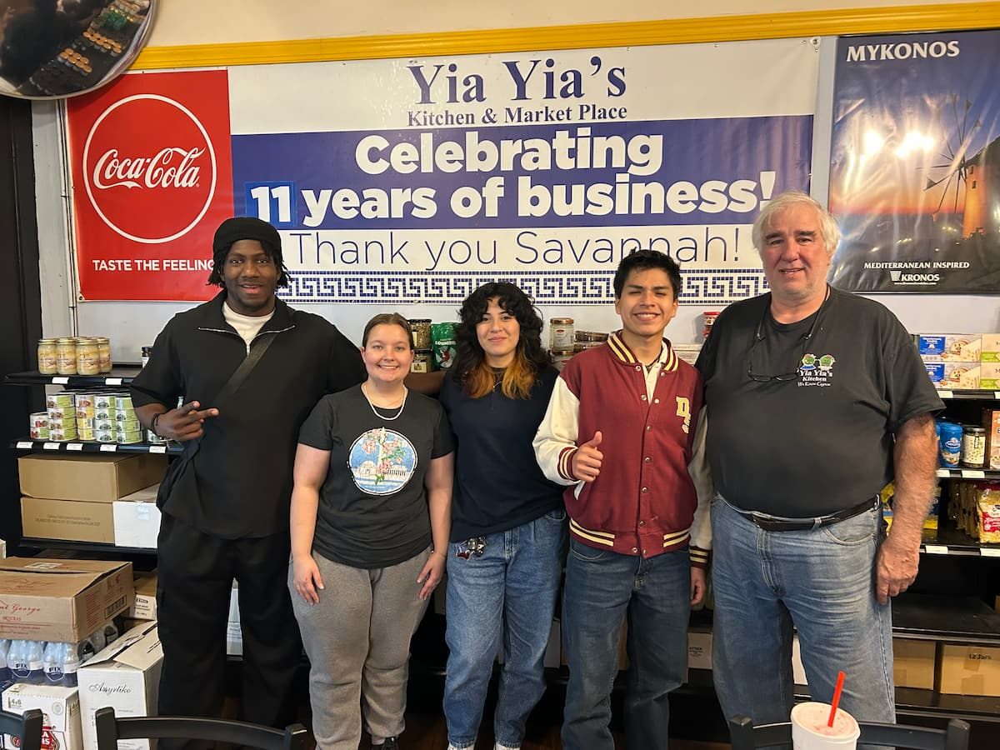

Hidden Stories, Student Discoveries
A student-produced podcast series exploring the history, culture, health, and community of Savannah, Georgia — one conversation at a time.
↓ exploreThe Podcast
Three seasons of student-produced storytelling from the heart of Savannah
"What career opportunities are available in Savannah for speech therapy and psychology majors?"
Expert: Prof. Tory Candea, Director of Clinical Education, Communication Sciences and Disorders Program
Ansley, Abigail, and Briana explore various ways college students can get job experience and internships in therapy and communication disorders in the Savannah area.
"What do the graves at Colonial Cemetery reveal about the history of epidemics in Savannah?"
Expert: Dr. Jennifer Zettler, Professor of Biology
Matthew, Christian, and Skyy explore the impact of Yellow Fever and Savannah's medical history through the lens of Colonial Cemetery's graves.
"What plants did Georgia's earliest settlers try to grow and why?"
Expert: Shawn Ferrer, Interpretive Ranger, Wormsloe State Historic Site
Cassandra, Abby, and Kiara explore the Trustees Garden in its historical, biological, and pharmacological contexts, explaining how early colonists created a biological research center to find the right plants for Georgia soil.
"What has the Frank Callen Boys and Girls Club done for the youth of Savannah?"
Expert: Mr. Mark Lindsay, CEO, Frank Callen Boys and Girls Club
Zaniya, Dontavious, Sarah, and Kelly examine the history and impact of the club on Savannah's young people over the years.
"Wondering what to do around Savannah to learn more about the area?"
Experts: Ranger Ellen Goza (Skidaway Island State Park); Dr. Cathy Sakas (retired NOAA Gray's Reef educator)
The team explores Fort Pulaski, Gray's Reef, Skidaway Island State Park, and Wormsloe to help you understand the history and natural beauty of the Savannah coast.
"How has Savannah's global influence shaped its history and communities?"
Experts: Dr. Christopher Hendricks; Ms. Laurely Caycho; Ms. Lescia Gonzalez Rivera
The team covers Savannah's foreign-born population, immigration waves, and how different cultures have influenced the city's buildings, neighborhoods, and campus life.
"What kinds of speech therapy offerings exist in Savannah?"
Experts: Bethany Manning; Ansley Sellers; Mallory King; Ashlee Sitzler (Sonshine Therapy, Memorial Children's Hospital, Speech Clinic of the Coastal Empire, SoundStart)
The team explores the area's speech-language pathology landscape across four unique settings, highlighting the passion and lived experiences that drive these professionals.
"Curious about the history behind one of Savannah's most trusted healthcare institutions?"
Experts: Dr. Sherry Danello, CNO; Dr. Meredith Scaccia, Mary Telfair Women's Hospital
The team explores the St. Joseph's/Candler legacy from its origins as two separate hospitals to their 1997 merger, uncovering the story of Mary Telfair and the nation's first women's hospital.
"What does the Savannah Jazz Festival mean to the city?"
Expert: Professor Stephen Primatic, Gretsch School of Music
The team covers the importance of this free festival — how it began, how it evolved, and what the future holds — and how it supports Savannah's history, tourism, and economy.
"How are Savannah's historic house museums telling more complete stories about the past?"
Experts: Kendall Graham, Historic Savannah Foundation; Danielle Hodes, Davenport House Museum
The team examines how museums are moving beyond romanticized versions of the Old South to humanize forgotten voices — including the stories of enslaved individuals and Savannah's Chinese immigrant community.
"What was the Armstrong campus like before it joined the university?"
Experts: Alumna Gabby Giles; Professor Olavi Arens
Gwyneth, Belle, and Stephanie explore the rich history of Armstrong State University, uncovering the campus's origins as a junior college in 1935 and painting a vivid picture of what the school was like before the merger.
"How do international flavors shape our cultural identity and enrich the Savannah community?"
Experts: Mr. Stathy Stathopoulos, Yia Yia's Kitchen; Mr. Chand Sharma, Pakwan Indian Cuisine
The team explores the city's global food scene, visiting Yia Yia's Kitchen, Pakwan Indian Cuisine, and Narra Tree Filipino restaurant to uncover the stories behind the menus.
"How did Forsyth Park transform from a 19th-century city commons into Savannah's cultural heart?"
Experts: Hugh Golson, local historian; Asia Harold, Executive Director, Forsyth Farmers' Market
The team uncovers the park's origins, the evolution of its iconic fountain and landscape, and the modern events that actively build Savannah's community today.
"How is modern technology transforming the treatment of speech and swallowing disorders?"
Experts: Pamela Thompson; Amy VanderMay
The team delves into how AAC tools and swallowing therapy technologies are utilized in Savannah, exploring how these advancements are improving the lives of patients across the city.
"What links a historic power plant to a world-renowned instrument manufacturer?"
Experts: Thomas Claxton, vocalist and producer; Angel Price Montgomery, student performer
The team traces the transformation of the 1912 Savannah Electric Power Plant into a premier entertainment hub and examines how the Gretsch family champions music education, providing an essential space for students to perform and learn.
Field Footage
Behind-the-scenes and supplemental footage from the Honors Savannah Scholars
Trustees Garden — field footage
Season 1, Episode 3
Frank Callen Boys & Girls Club — full visit
Season 2, Episode 1
Short: Club impact interview
Season 2, Episode 1
Short: Club highlights
Season 2, Episode 1
Short: Trustees Garden visit
Season 1, Episode 3
Short: Trustees Garden highlights
Season 1, Episode 3
Gallery
Images from the field, interviews, and campus — three seasons in the making








The Project
Savannah Uncovered is a student-produced podcast series created by the Honors Savannah Scholars — students at Georgia Southern University's Armstrong Campus in Savannah. Each episode is researched, recorded, and produced by students exploring the city they call home — from its history and healthcare to its music, food, and the people who make it vibrant.
Our scholars interview local experts, visit historic sites, and bring Savannah's stories to a wider audience. The podcast is now in its third season, with fifteen episodes spanning topics from colonial botany and Yellow Fever to modern speech therapy, jazz, and international cuisine.
Every episode is a collaboration between curious students and generous community experts who share their knowledge and passion for this remarkable city.
A project of the Honors Savannah Scholars
Some of our scholars
Cassandra
Seasons 1, 2 & 3
Kiara
Seasons 1, 2 & 3
Ansley
Seasons 1, 2 & 3
Bryce
Seasons 2 & 3
Gwyneth
Seasons 2 & 3
Vanessa
Seasons 2 & 3